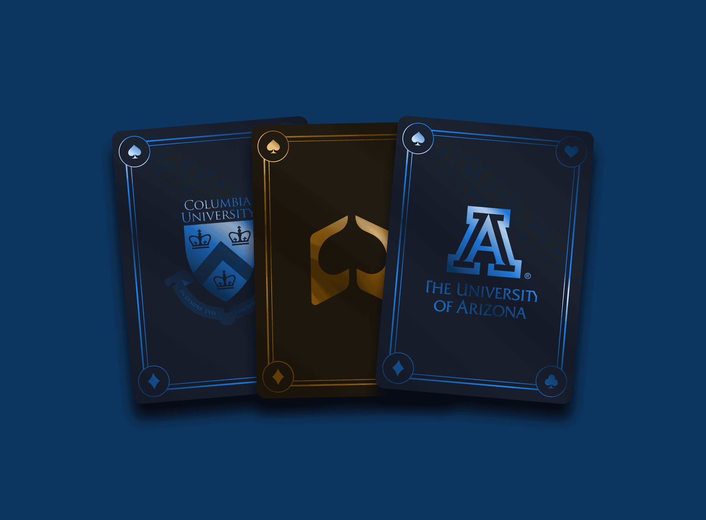
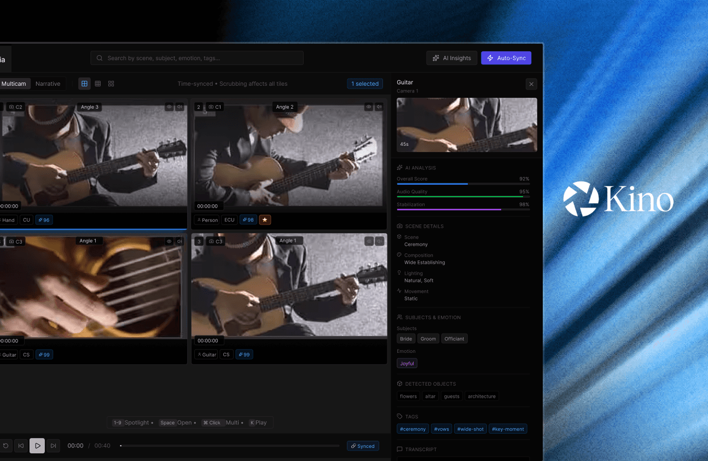
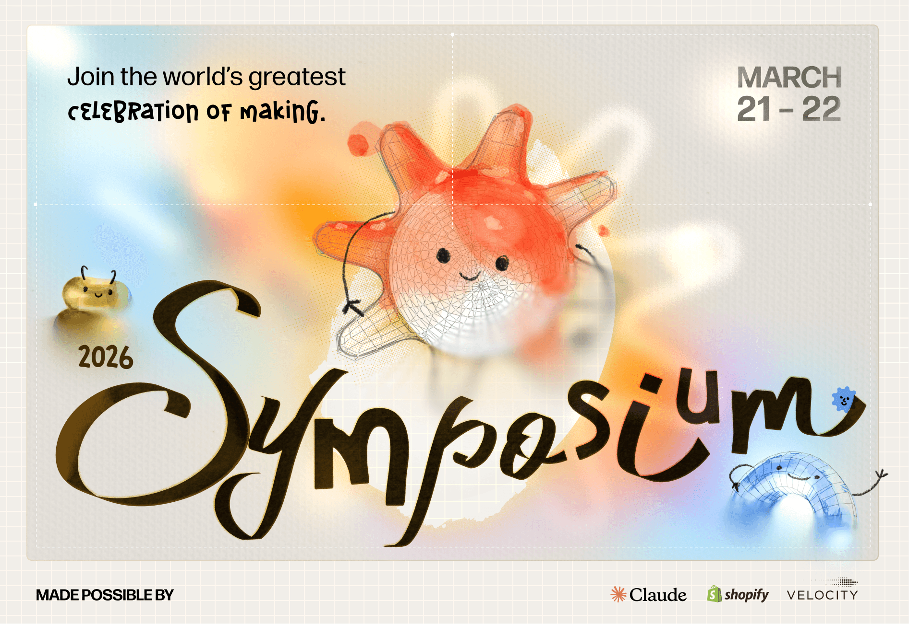
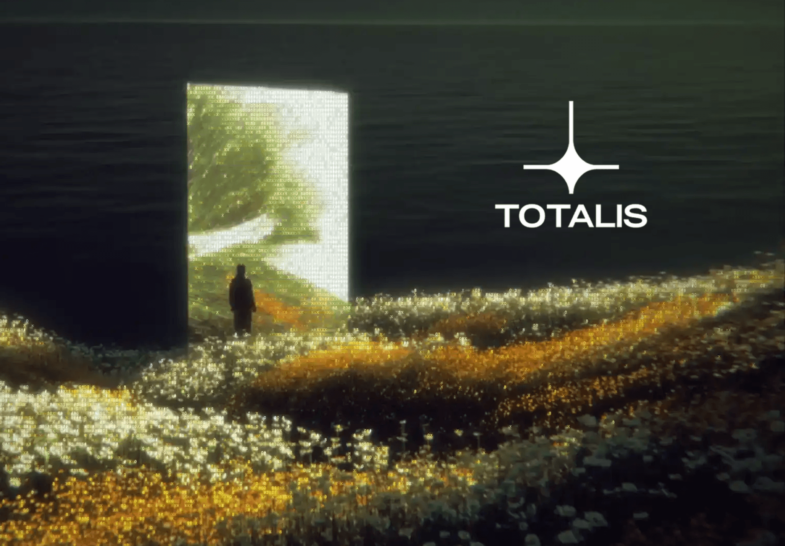
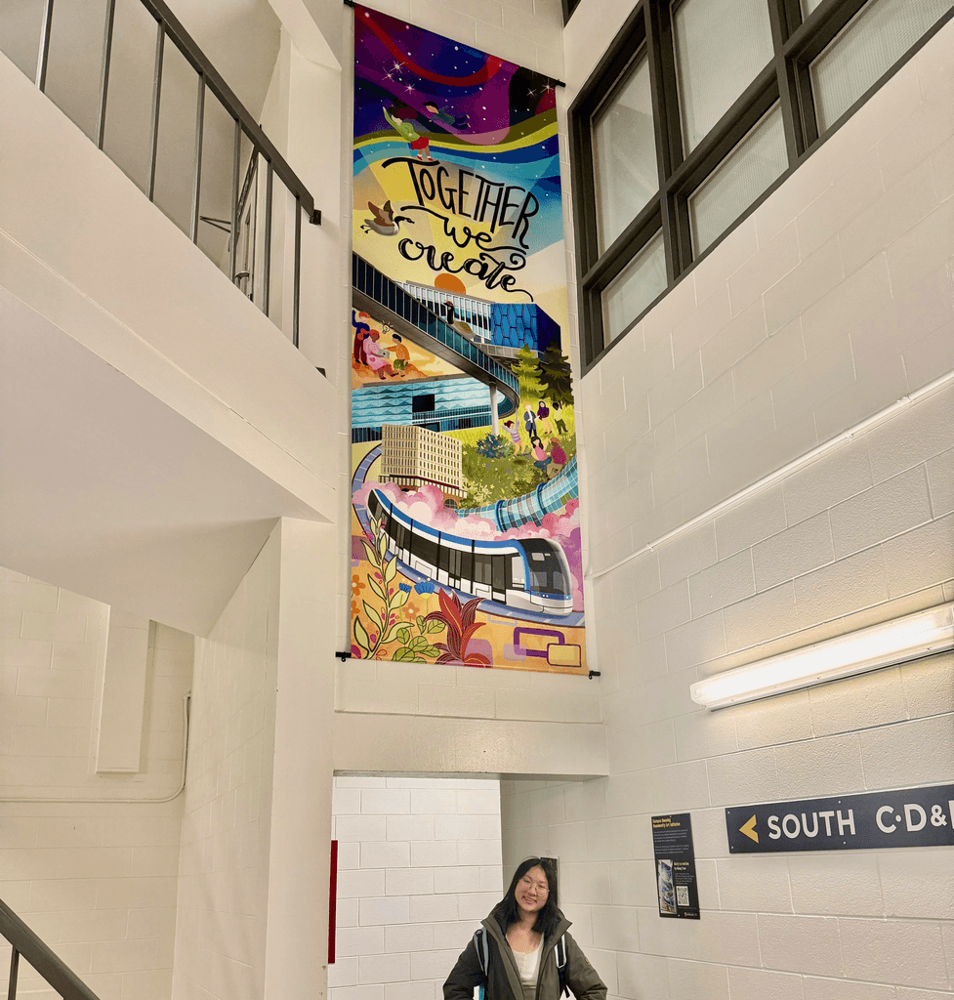
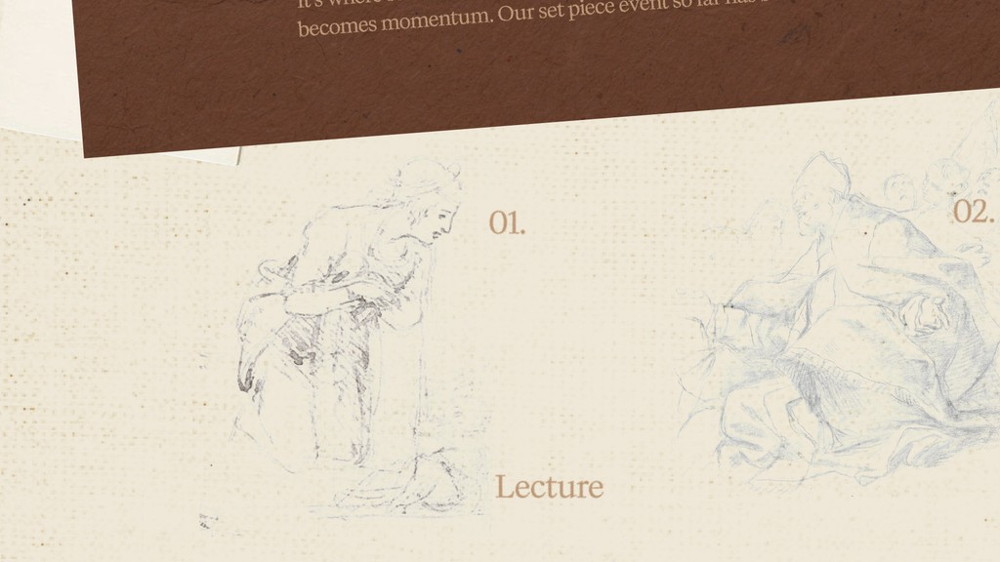
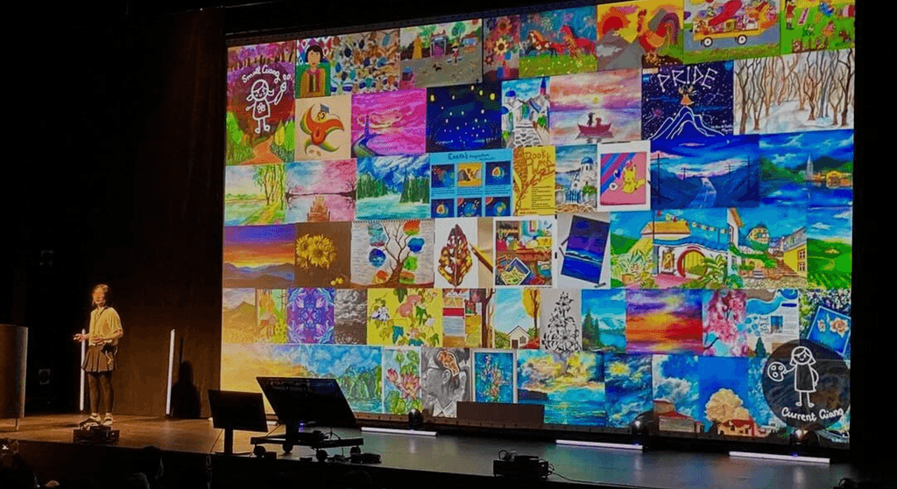

Persona
Shaping foundational architecture, logic and product patterns for the world's leading identity verification platform
Rootly
Driving product features, branding, and AI-native workflows for an enterprise on-call platform used by Fortune 500s

Pure
Bringing structure to the world's first fully compliant, community driven, and rake-free poker network.

Kino AI
Reimagining how editors navigate multicam footage and AI-first metadata

Socratica
A dynamic & scalable visual identity for a rapidly expanding, multi-city maker collective

Totalis
Designing the next primitive for prediction markets



Beyond designing!
From illustrating a 17-foot community mural, to creating a billboard for Times Square and painting endless canvases, my pursuit of creative excellence has carried me to extraordinary places